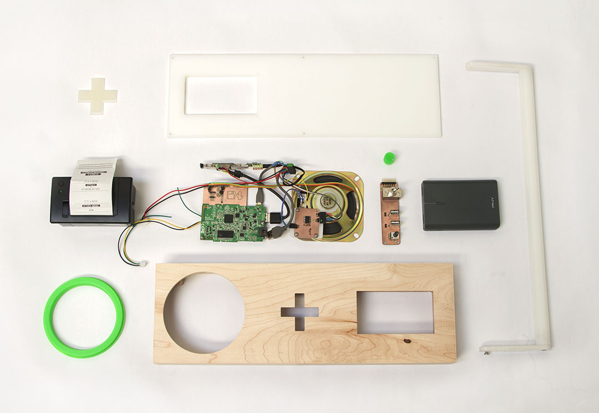
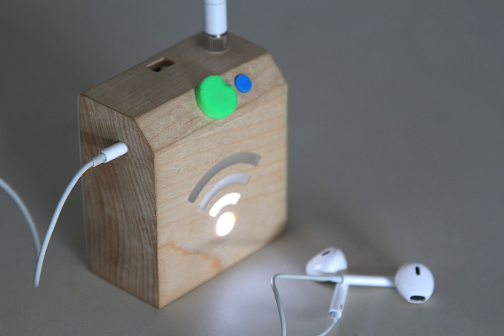
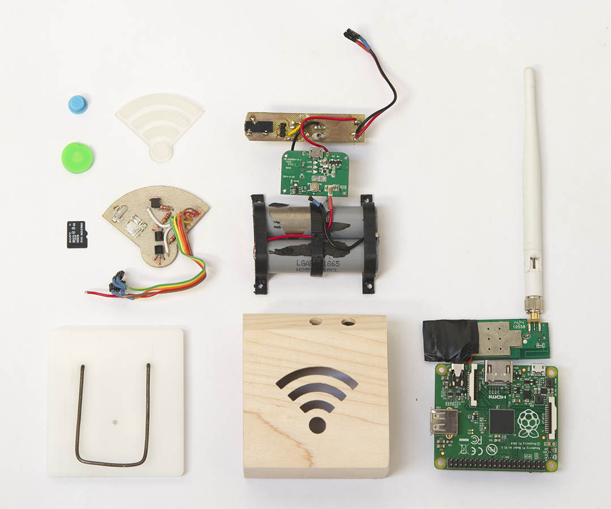
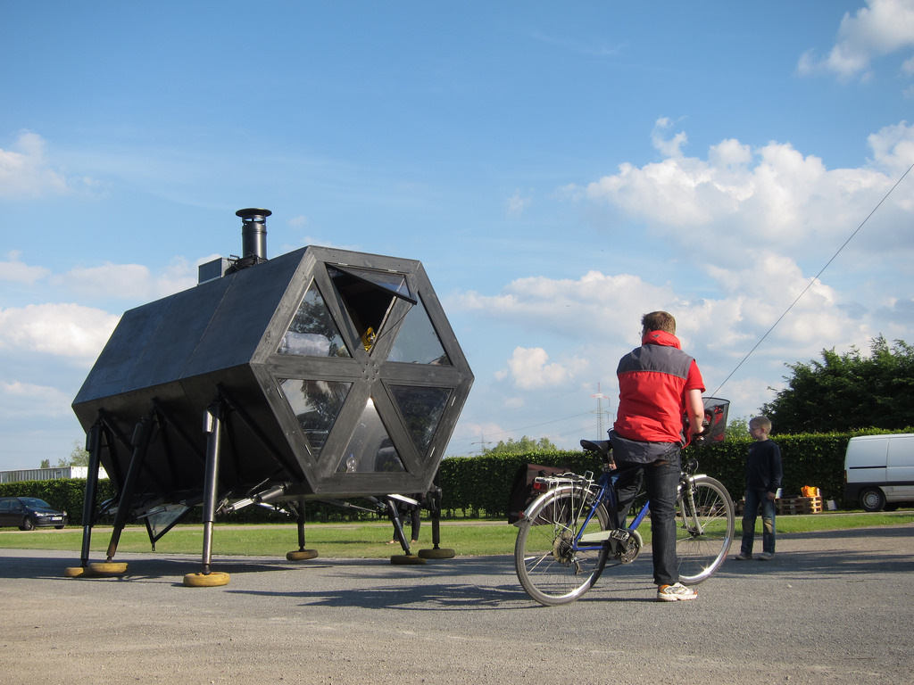
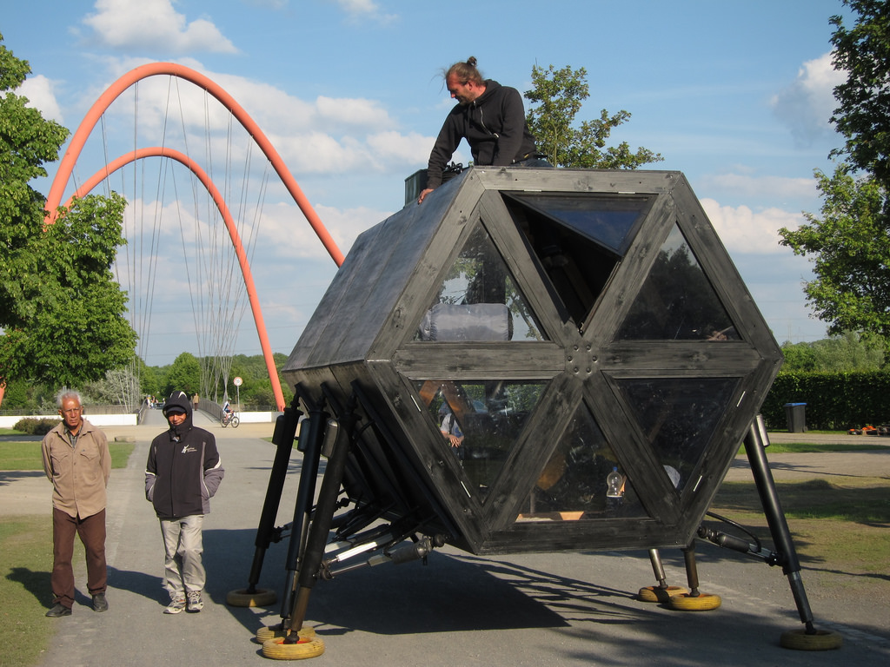
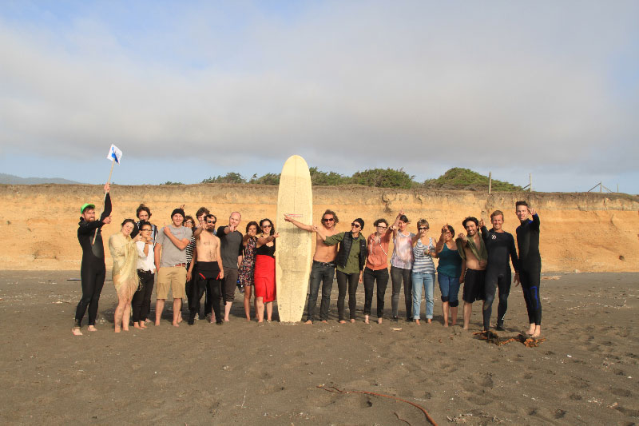
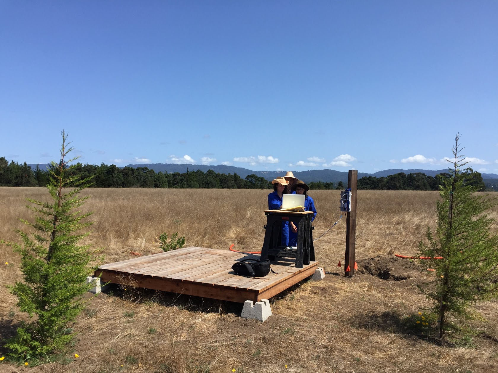

Sam Kronick
Concept
Point your camera at the world around you. Harnessing cutting-edge artificial neural network technology, AI • Scry (rhymes with "I spy") generates automatic textual descriptions of the objects it sees.
View more about this project at http://u1f52e.net/.
Press: The Verge, Fast Company, Tech Crunch, The Creators Project and Hyperallergic.
Technical
AI • Scry is built on top of Andrej Karpathy's neuraltalk2 library. To turn that code into a consumer-friendly app that can be downloaded in a single tap I wrote a scalable cloud backend server and an iOS frontend.
On a modern CPU core, neuraltalk2 provides about one caption for an image per second. To get responsiveness that feels like the app is providing captions on a live video feed for even a handful of users at once, I quickly realized I would need to build a scaling load-balanced cluster of servers. Since I expected demand to rise and fall sharply, I chose to do this with Amazon EC2 instances and built a messaging protocol that allowed worker processes to come and go without reconfiguring the whole cluster.
I also built a custom logging and analytics server so I could track spikes in usage, status of worker processes, and overall usage trends. Over 3000 users purchased the app in its first two months, with an overall average of time spent in-app of 7.56 minutes and an average of 4.53 sessions per user. Not bad for a mysterious 99-cent art app with no marketing budget!
Technologies used: Swift 2, Python, SQLite3, Flask, zeromq, lua, Amazon EC2
Concept
Consensual Vibes is a proprietary ideation platform developed for 💾🌵 ("Disk Cactus") studio. When we started the studio, we recognized the importance of generating a steady flow of unconventional ideas so I invented the Consensual Vibes algorithm to mediate the process.
The process begins by brainstorming words associated loosely with an overall concept or theme. Then, each team member loads the app on their phone. The algorithm randomly sticks two or more words together to create a potential hybrid concept. For each combination, team members can swipe left if they don't like the idea or swipe right if they do. When all team members swipe right on the same concept, it's a match!
Like any good generative system, Consensual Vibes starts with a relatively simple set of rules that create a low barrier to participation, but it winds up creating rich, strange, and captivating ideas that players may never have thought of on their own.
The entire experience is mediated by a boombox-like device that contains a wireless router to serve the app, a receipt printer that records matches, and a speaker that announces when a match has been made. The device also acts as the center of a more elaborate ritual designed to escape conventional thinking, initiated with a process of collecting soil from the chosen activity site in a remote setting. See the video below for documentation of the full ritual.
Technical
Since the entire experience of using this app is designed to work offline and in the wilderness, the content is served from a small battery-powered WIFI router running OpenWRT contained within the boombox. The router creates a captive portal running a lightweight webapp built with Flask and SQLite. The frontend is built with HTML5/CSS3/Javascript and is served from the OpenWRT router, so it exists independently of any app store.
I designed the device enclosure in Rhino3D and milled it from a solid piece of white maple on a CNC router. I also designed and fabricated PCBs for the audio amplification and LED indicator light electronics. Finally, I designed and fabricated molds for plastic resin-cast accents that give the device additional character.
Technologies used: OpenWRT, Python, Flask, SQLite3, HTML5, CSS3, Javascript Javascript, jQuery, Rhino3D, RhinoCAM, CNC router, polyurethane resin
💾🌵🎈😎💩❤️ is the new QWERTY.
When I co-founded 💾🌵 (pronounced "Disk Cactus") studio, I gave it a distinctive and timely name composed solely of two unicode emoji characters (our official LLC paperwork even has us incorporated as U+1F4BE U+1F355, LLC, the longhand representation of the unicode code points for these characters). While most mobile devices today have great support for entering emoji characters, our team realized that a lot of our work and communication with clients was going to take place on a laptop keyboard. To let us type our own name (as well as many of our other favorite emoji), we invented the Emoji Keyboard— a silicone keyboard overlay and OSX keyboard layout software that turns caps lock into emoji mode.
We launched this product with a successful Kickstarter campaign, raising over $20,000. Cosmo called it "the most important Kickstarter campaign of our time" and it is now available from Amazon.com and Urban Outfitters (in stores and online).

More info at http://emojikeyboard.club
Concept
Can explosions make music? This was the brief that Magnetic handed to 💾🌵 for Google's interactive pavilion at Maker Faire 2015. We made it possible with a combination of computer vision tech and a generative music algorithm that mapped exploding confetti particles to pitch and volume of different instruments. With an industrial high speed camera, we turned over 1000 fleeting moments into 1000 unique sound compositions for 1000+ families that stopped by our booth.
Technical
This installation consisted of 3 main components: a camera capture system, a video processing and visualization application, and a generative sound system. I chose to use a XIMEA high framerate industrial camera module because of it's API support. XIMEA provides a C language library that works on OSX and I wrote a wrapper for that to work with the Cinder framework in C++. The video processing is done using OpenCV and Cinder with some help from GLSL shaders. The movement of each individual particle of confetti is tracked, and information from the particles' position and velocity is used to generate OSC control messages that are passed to a Max/MSP patch. The patch then generates a realtime polyphonic soundscape using four different synthetic instruments designed for the activation.
The video below shows the visual software interface with the four different colors of particles separated out.
Technologies used: Cinder (C/C++), OpenCV (C++), XIMEA industrial camera, Max/MSP, Open Sound Control (OSC)
Concept
The WIFI Walkman is an information sonification device that allows you to hear the presence of invisible WIFI signals that permeate our environment. It is designed to be portable so that a user can experience spatial differences in network density and character. It was produced as an extension of work I did with The Consortium for Slower Internet.
Technical
The WIFI Walkman is powered by a Raspberry Pi 2. The software scans for WIFI network names, converts the network MAC addresses to a unique sequence of audio tones, and reads the network SSID using text-to-speech software. All the hardware components are packed into a custom enclosure CNC milled from a block of maple wood with resin-cast accents.
Technologies used: Raspberry Pi, Python, sox, espeak, Rhino3D, RhinoCAM, CNC router, polyurethane resin
Concept
In 2008, I started collaborating with Danish artist collective N55. One of the projects we produced together is the WALKING HOUSE.
WALKING HOUSE is a modular dwelling system that enables persons to live a peaceful nomadic life, moving slowly through the landscape or cityscape with minimal impact on the environment. It collects energy from its surroundings using solar cells and small windmills. There is a system for collecting rain water and a system for solar heated hot water. A small greenhouse unit can be added to the basic living module, to provide a substantial part of the food needed by the Inhabitants. A composting toilet system allows sewage produced by the inhabitants to be disposed of. A small wood burning stove could be added to provide CO2 neutral heating. WALKING HOUSE forms various sizes of communities or WALKING VILLAGES when more units are added together. WALKING HOUSE is not dependent on existing infrastructure like roads, but moves on all sorts of terrain.
The WALKING HOUSE was commissioned by Wysing Arts Center in the U.K. and presented as part of the 2010 European Capital of Culture near Essen, Germany. As part of the latter exhibition, it walked every day in public performances for 100 days. Two friends and I lived inside and maintained the house during the course of exhibition.
More at N55.dk.
Technical
As part of this collaboration, I was responsible for most of the power systems engineering and software design. The house walks on six fully articulated legs each powered by three electric linear actuators in a tetrahedral arrangement. The whole system is solar powered to be sustainable off the grid.
The unique tetrahedral design of the leg required me to derive custom kinematics equations and write a walking algorithm that would ensure all 18 actuators stayed perfectly synchronized; due to the weight of the house and the strength of the actuators, any mismatch in movement would literally tear the house apart. As part of the system, I designed custom Arduino-based quadrature encoder boards and motor control electronics to handle all 18 channels of motion at once.
Technologies used: Processing, Arduino, motion control electronics
Concept
When I was working with the team at Sosolimited, I worked on the software that drives a permanent social media-powered LED video wall in the entryway to iHeartRadio's new concert venue in Burbank, CA. The system we built pulls live tweets about artists and dynamically remixes archival video footage to capture the unique energy of every event. To program and moderate content, the system also has a web-based content management system, so iHeartRadio's staff across the country can be in control.
Technical
iHeartRadio had a lot of unedited, raw footage from past concerts that they wanted to be able to use on this video wall with minimal effort. This meant eliminating most post-production work, so the software we built had to automate some of the basic features of a video editing system like AfterEffects. As a result, all video transitions, graphic overlays, video effects, and the inclusion of social media data are done in realtime using openFrameworks and GLSL shaders. The result is that no matter what quality of content iHeartRadio staff throws at the wall, it always looks pretty good.
Another major challenge for this project was building a web-based CMS frontend that could reliably control the display. Because everything was running on multiple machines and written in multiple languages, I suggested a messaging architecture using RabbitMQ that would ensure all configuration changes and state transitions were kept in sync regardless of whether one piece needed to be restarted independently of the others.
Technologies used: openFrameworks / C++, GLSL, ffmpeg, Flask, RabbitMQ
Concept
This is another permanent installation I worked on with the team at Sosolimited. The concept here was to build an architectural-scale data visualization for the Center for Strategic and International Studies new headquarters in Washington, DC. The result is a "data chandelier" with 425 independently controlled pendants that form a map of the world when viewed from below. We used this as a canvas to tell stories with data sources relevant to CSIS's work such as GDP growth and global water usage.
Technical
As a permanent installation, a lot of work went into designing and pre-visualizing the final physical form of this work. I developed a number of Processing sketches to experiment with different forms and display resolutions. Initially the resolution of pendants was to be much higher but this had to be reduced for cost reasons; the sketches I made helped determine how low we could go and still have a legible display.
I also wrote Python scripts to process the raw data and turn it into a format that our animation library in openFrameworks could work with. I helped script those animations and wrote a OSX Cocoa UI to adjust parameters and provide a final interface to the installation. The openFrameworks app outputs DMX signals that are then handled by standard lighting hardware integrated into the structure.
Technologies used: Python, openFrameworks (C++), ofxDMX, Objective C / Cocoa
Concept
DBLCAM is an iPhone app that lets you take two photos back-to-back using the two cameras on your iPhone. I came up with the idea soon after I heard that the iPhone 4 would add a front-facing camera and learned Objective C and iOS development just to make it happen. Later on I sold the app to Social Print Studio and to date it has over a million downloads.
Try it out in the App Store and see how people are using it on Instagram.
Concept
Back in 2012, The Creators Project approached me and the team at Social Print Studio to build an interactive Instagram visualizer for their art and music festival at Fort Mason in San Francisco. This format of interactive social media display is common now, but at the time it was only recently possible: Instagram had just released their API and the Microsoft Kinect had just become available.
Technical
Technologies used: Processing (Java), OpenGL, Microsoft Kinect, Instagram API
Concept
In 2015, I co-founded the first annual World Wide West festival of new media, arts, and digital culture. We invited 25 artists, writers, and technologists from across the country to convene in Point Arena, CA for a weekend of activity and discussions. We wanted to create space for much-needed critical discourse about technology and art in the SF Bay Area.
One of the main activities that I planned was the performative burial of a 350-meter-long fiber optic cable to create a new Internet node in the middle of a field. Participants used shovels to dig a trench for the cable by hand over the course of the event.
In keeping with the theme of exploring internet infrastructure, I also organized a visit to the site of a trans-Pacific submarine fiber optic cable that lands on a beach in Manchester, CA. We invited guests to bring wetsuits and surfboards so we could all literally "surf the web".
World Wide West will return for its second year in the summer of 2016 with an expanded roster of artists. View the archive from 2015 or read about it on Hyperallergic.
 